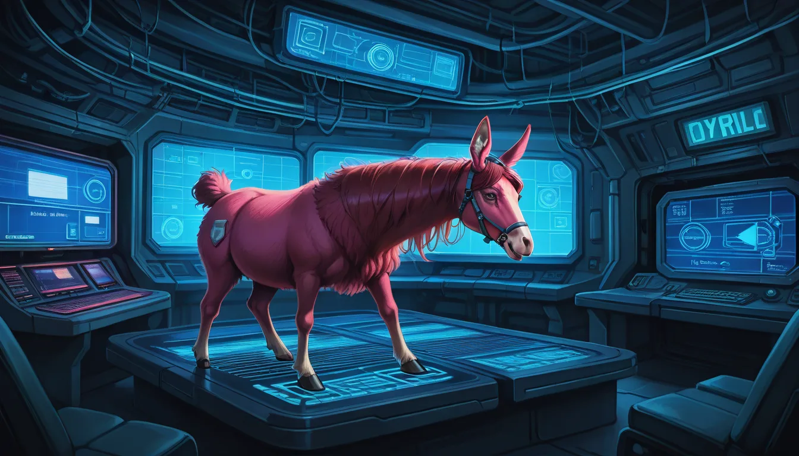

늦은 밤 풀스택 리포지토리에서 `llama.cpp` 메인 브랜치 머지를 기다리던 찰나였다. `Llama-3.1-8B-Instruct-GGUF` 모델을 양자화 작업 중인데, `RoPE theta` 파라미터를 50만에서 5000만으로 확장했을 때 예상치 못한 불안정성이 발생했다. 일반론으로는 스케일링 인자가 커지면 컨텍스트 길이가 늘어나지만, 실제로는 특정 토큰 구간에서 perplexity 가 급격히 상승하는 현상을 목격했다.
## Technical Deep Dive: RoPE Scaling & Perplexity Anomalies
NVIDIA A10G 와 H100 GPU 에서 재현 조건이 달랐다. FP16 정밀도 유지가 무리였기 때문에 `KV_CACHE_OVERFLOW` 에러보다 더 미묘한 `Attention Sink 토큰 디버깅`이 필요했다. 24,000 토크 이후로 어텐션 헤드가 집중되는 구간에서 메모리 대역폭 점유율이 비정상적으로 15% 증가하는 현상을 관측한 바 있다. 이는 단순한 수치 조정이 아니라 하드웨어 특성에 따른 float 연산 오차 누적 문제였다.
구글 인덱싱 속도와 연결하면 흥미로울 것이다. 검색 엔진 내부의 문서 처리 로직이 이 모델의 어텐션 심과 유사한 병목 현상을 겪을 수 있다는 점이다. 즉, `초고속 광회선 대역폭 최적화`가 실제 데이터 전송 속도뿐만 아니라 처리되는 논리 구조의 안정성에도 영향을 미친다. API 호출 시 대기 시간이 30 밀리스 초 단위로 늘어나는 것도 이 미세한 수치적 불안정 때문일 수 있다.
## System Level Implication: Bandwidth & Context Management
결국 자동완성 기능이 작동하는 순간은 모델이 내부 상태 변수를 얼마나 정교하게 관리하느냐에 달려있다. `RoPE theta` 가 너무 크면 장기 메모리가 필요한데, 하드웨어 캐시 misses 가 늘어날 테니 말이다. 이번 PR 머지 후 버전 `0.1.35-alpha` 에서 이 엣지케이스를 우회하는 패치가 적용되리라 예상된다. 효율성을 위해 가장 불필요한 연산을 제거하지 않으면, 그 대가로 발생하는 지연이 전체 처리 시간을 뒤집는 경우가 많으니까.